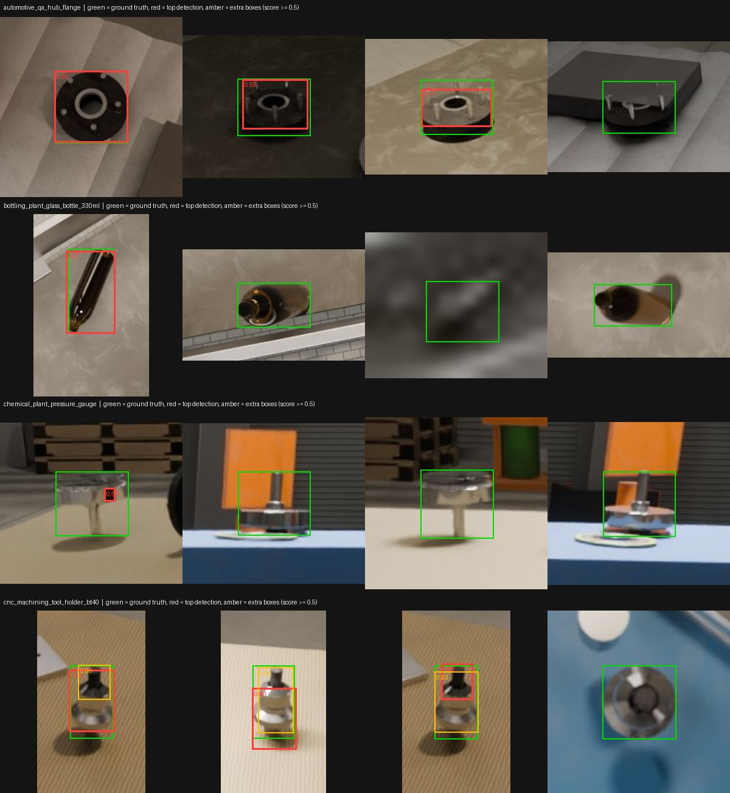
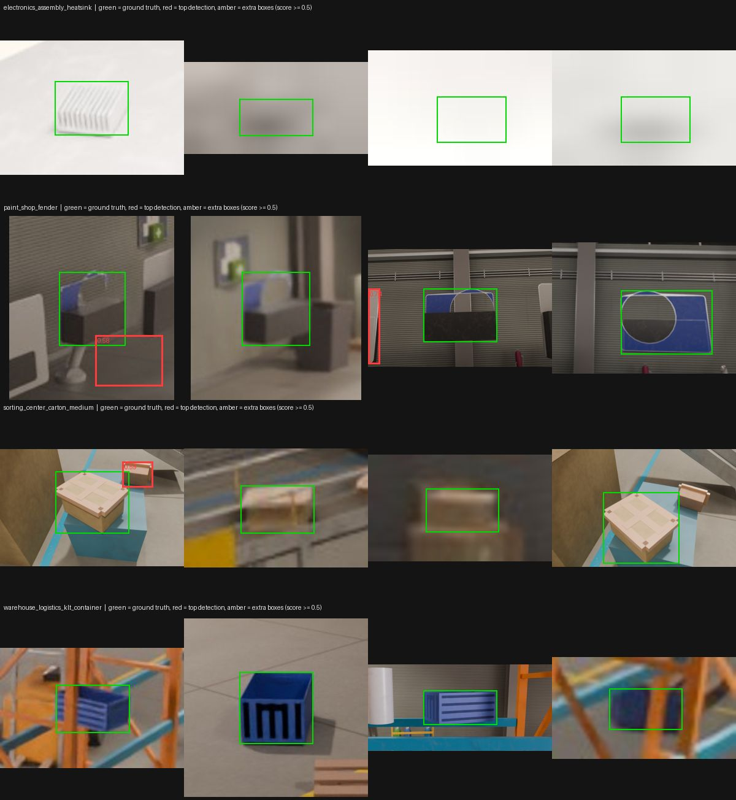

Detect Anything Fast
A SOL Laboratories entry
by Thomas Pöllabauer-Berkei
24 August 2026 — back to SOL Laboratories
Motivation
Most object-detection projects assume you already have hundreds of labeled images and a cloud GPU bill to match. Detect Anything Fast starts from the opposite assumption: you have one to a few photos of a single object, a few minutes, and hardware you already own. The system trains a real object detector for that object end to end — no cloud API, no third-party vendor in the loop, and no photo of your object ever leaves your own infrastructure. It runs on a single consumer GPU, fits a hard few-minute budget because a person is sitting there waiting for it, and the resulting model runs live in a browser afterwards. Speed, cost, and keeping your data on your own machines are the point — not squeezing out one more accuracy point.
How it works
One decision in that middle step is not obvious and matters more than it looks: when a cut-out object is pasted onto a new background, it inherits the photo's own sharpness, noise, and colour statistics, while the background around it has a different one. Paste it in unchanged and a detector doesn't learn the object — it learns to find that mismatched seam, and then fails on real photos that never have it. So before pasting, each cut-out is pushed through its own resampling, blur, noise, and colour-matching pass tuned to where it's about to land, matching the destination's imaging history rather than just brightness. It's the difference between a detector that has actually learned the object's shape and one that has learned an artifact of how the training image was built.
See it run
Results
Neither test video has ground-truth annotation, so nothing below is an accuracy figure. What's reported is what the detector's own output looks like across the footage: how often it fires, how confident it is, and how steady the box is from one frame to the next.
Wooden spinning top
- 90.8% / 99.1%frames fired (7 / 14 min)
- 0.74 / 0.61median confidence
- 0.90 / 0.90box stability (median IoU frame-to-frame)
- 442.9 s / 565.2 swall clock (budget 420 s / 840 s)
Trained from 16 hand-held photos, over the same 534-frame clip both times. Neither test video has ground-truth annotation, so nothing here is an accuracy figure. The standard run overran its 420 s budget at 442.9 s (cut-out and synthesis running longer than the reference fixture on real, cluttered, hand-held photos); the extended run finished at 565.2 s, comfortably inside its 840 s budget. With 7 more minutes (14 in total), the detector fired on nearly every frame (99.1% vs. 90.8%) with the same frame-to-frame box stability (0.90 both), at the cost of a lower median confidence (0.61 vs. 0.74) and two more jitter events (43 vs. 41). Unlike the bonsai tree below, this object did improve on one clear measure — how often the detector fires at all — though not on how confident it is when it does. The shipped defaults were not tuned to produce this result either way; both numbers are reported as measured.
LEGO bonsai tree
- 88.9% / 85.6%frames fired (7 / 14 min)
- 0.77 / 0.81median confidence
- 0.90 / 0.89box stability (median IoU frame-to-frame)
- 434.0 s / 577.3 swall clock (budget 420 s / 840 s)
Trained from 12 hand-held photos, over 583 frames both times (same test clip, same photos both runs). Neither test video has ground-truth annotation, so nothing below is an accuracy figure. With 7 more minutes (14 in total: 577.3 s against an 840 s budget, comfortably inside it, versus 434.0 s against 420 s standard), the detector fired on fewer frames (85.6% vs. 88.9%) and jittered more often (35 events vs. 26), while median confidence rose slightly (0.81 vs. 0.77) and box stability held roughly flat (0.89 vs. 0.90). That's a null result, not an improvement — the extra training time did not make this detector better, and on two of four measures it looks slightly worse. The likely explanation: twelve photographs is the limiting factor here, not the 420-second clock; more optimizer steps over the same small, synthetic-heavy training set does not manufacture information that was never in the twelve photos to begin with.
How far it generalizes
The two objects above are successes, and two successes are an anecdote. To find out where the system actually stops working, it is measured against a 36-object public benchmark built from four permissively licensed academic datasets (YCB-V, HomebrewedDB, T-LESS, LineMOD). Each object gets six input photographs and twenty held-out real photographs with ground-truth boxes — genuine annotated accuracy, not the label-free video statistics above. The object selection is seeded and the corpus is content-addressed, so the same benchmark rebuilds byte-identically; twelve of the thirty-six objects are sealed away and never used for tuning.
These are hard photographs on purpose: cluttered laboratory scenes with many other objects in frame, most of them industrial parts that look a great deal like each other. They are much harder than a person holding one object up to a webcam, which is what the system is actually built for.
- 1 of 24objects the detector never finds at all
- 19 of 24objects it does locate on the held-out photographs
- 75–90%of held-out frames carry a detection
- 12%of objects pass the strict ship criterion
That last number is the honest headline, and the gap between it and the three before it is the interesting part. The ship criterion is deliberately unforgiving: an object counts only if, on most of its twenty photographs, the detector produces exactly one confident box in the right place. An image with the target correctly boxed and a second confident box somewhere else fails outright, and scores zero.
Measuring which of those two things goes wrong turned out to matter more than the headline. It is almost never blindness — the detector finds its target in the great majority of frames. It is competing boxes: roughly 84% of the extra confident boxes land on a different object in the scene, not on a duplicate of the target. In a cluttered bin of similar industrial parts, a detector trained on one of them fires on its neighbours.
So the fair statement of what this system does is narrower than its name: it trains a detector for your object, against the kind of background you photographed it on, in minutes. It is not a general-purpose detector, and it degrades when other objects compete for the box. That is the limitation to know about before pointing it at a busy scene — and, unsurprisingly, it is where the current work is.
Cluttered industrial scenes
The public benchmark above uses real photographs. To probe the failure it exposed, the same pipeline was also run on eight rendered industrial scenes — automotive QA, bottling, chemical plant, CNC machining, electronics assembly, paint shop, sorting centre and warehouse — each full of lookalike parts. These are renders, not photographs, and they are our own synthetic data. One object per scene was trained from six input crops and scored on twenty held-out crops cut from different renders than the inputs (separate scene ids, though of the same scene types), with the shipped defaults and a 420-second training budget. Wall-clock time ran 387–512 s, so six of the sixteen runs overran that budget, one by about 90 s. In each scene the object is the one with the most usable held-out crops (two were set by hand instead), which favours objects that are easy to isolate.
One deliberate simplification: every input and held-out image is a 2.5× context crop around a single target instance, and a crop is kept only if no second visible instance of the same object overlaps it. Neighbouring objects of other kinds stay in frame, so confusion with lookalikes is still tested; a second box on a second copy of the target is not, because the scoring would wrongly count it as a mistake.
- 1 of 8objects located reliably (shipped defaults)
- 29%of held-out crops carry a confident detection
- 14%single-box pass rate over all crops
- 58%of the 19 competing boxes land somewhere off the target
| Scene — object | Shipped defaults (of 20 crops) | With composited negatives (of 20 crops) |
| Automotive QA — hub flange | 16 passing · 16 with a detection | 7 passing · 7 with a detection |
| Bottling plant — glass bottle | 1 passing · 1 with a detection | 2 passing · 2 with a detection |
| Chemical plant — pressure gauge | 0 passing · 2 with a detection | 0 passing · 3 with a detection |
| CNC machining — tool holder | 5 passing · 18 with a detection | 3 passing · 13 with a detection |
| Electronics assembly — heatsink | 0 passing · 1 with a detection | 0 passing · 0 with a detection |
| Paint shop — fender | 0 passing · 5 with a detection | 0 passing · 9 with a detection |
| Sorting centre — medium carton | 0 passing · 3 with a detection | 0 passing · 6 with a detection |
| Warehouse — plastic crate | 0 passing · 0 with a detection | 0 passing · 9 with a detection |
“Passing” is the strict criterion described above: exactly one confident box, in the right place. “With a detection” counts crops where the detector fired at all. The second column repeats every run with the discrimination recipe from earlier work: a quarter of the background frames carry a pasted-in distractor, and background-only frames rise from 15% to 30% of the mix, so two things change at once. It fires on slightly more crops overall (31% against 29%) and passes fewer (7.5% against 13.8%), but that gap is one object: the hub flange drops from 16 passing crops to 7, while the other seven together pass 6 crops against 5. With one seed that is within noise, not evidence the recipe hurts. It locates none of the eight.
What it looks like


The reading. These scenes are harder than the public benchmark, and the difference is instructive. There, the detector usually fired and failed by adding boxes elsewhere in the scene; here it mostly stays silent, firing on 29% of crops, and only one object — the automotive hub flange — is found reliably. Competing boxes still exist but come from very few objects: with the shipped defaults the CNC tool holder accounts for 18 of the 19 (10 of them off the target), and with composited negatives the fender accounts for 9 of the 13. So the earlier statement that the dominant failure is a confident box on some other object describes those two scenes and does not describe the rest, where the failure is a target the detector never picks up. Part of that is the data (blurred and overexposed renders, six input crops per object, one seed, one object per scene), so this section supports “fails often on cluttered, low-quality scenes”, not any figure for how it would do on your factory floor. Whether extra distractor and background frames help is not settled by eight objects and one seed; here they did not rescue it.
Measured facts
| Training photos | 16 (spinning top), 12 (bonsai tree) — hand-held phone photos, not a curated dataset |
| Wall-clock time | 442.9 s and 434.0 s against a 420 s budget — both runs overran; overrun reported, not hidden |
| Hardware | a single NVIDIA RTX 2060 Super (8 GB) plus a consumer 6-core CPU, on our own GPU host and a private Kubernetes cluster — no cloud GPU rented for these runs |
| Where it runs | continuously deployed on that same self-hosted infrastructure, not a one-off script — a visitor can run the whole pipeline again right now |
| Interface | a point-and-click browser upload and confirm flow — no command line, no config file, built for someone who isn't a machine-learning engineer |
| Licensing | every dependency shipped with the trained model is permissively licensed, because the exported model is served straight into a client's browser |
| Data handling | uploaded photos and the trained model stay on the operator's own infrastructure end to end |
| Validation | both objects above were never seen during development and were filmed on an ordinary phone, hand-held, not staged for the camera |
| Industrial scenes | eight rendered scenes, one object each, six input crops and twenty held-out crops per object — one object is found reliably; most failures are a missed target, not a competing box |
| Generalization | measured on a 36-object public benchmark (YCB-V, HomebrewedDB, T-LESS, LineMOD) with twenty ground-truth-annotated held-out photographs per object — 12% of objects pass the strict single-box ship criterion, and the dominant failure is a confident box on a neighbouring object rather than a missed target |
If your problem looks like this — your own hardware, your own data that can't leave the building, a small compute budget, and a training time measured in minutes rather than hours — this is the constraint set the system is built around.
About & contact
Built by Thomas Pöllabauer-Berkei — the detection and synthetic-data modeling, the browser interface, and the Kubernetes deployment and operation are all one person's work, top to bottom. Professional background and contact details are on the home page; you can also connect on LinkedIn.